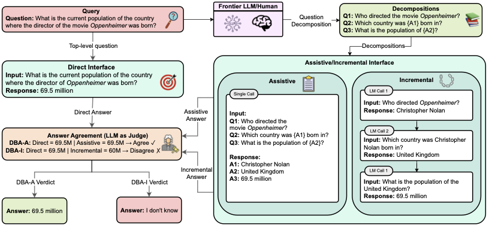
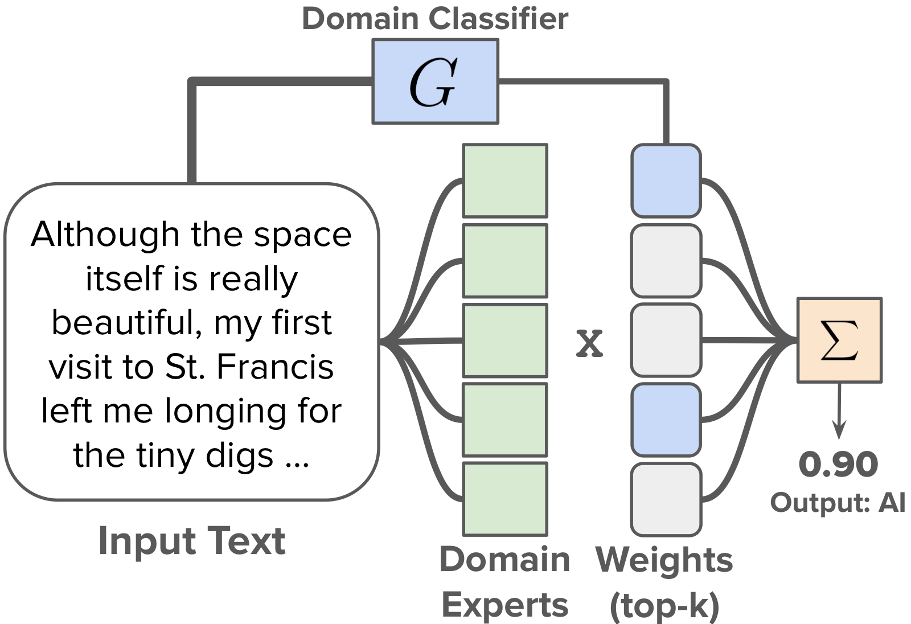

|
Lyuxin (David) Zhang
I'm an undergraduate and accelerated master's student at the University of Pennsylvania,
studying Computer Science & Mathematics (B.A.) and Data Science (M.S.E.), graduating in 2027.
My research is on trustworthy machine learning and the science of large language models —
including in-context learning, LLM reasoning and abstention, and AI-generated text detection.
I'm fortunate to work with Surbhi Goel and
Dan Roth, and have collaborated with
Eric Wong and
Chris Callison-Burch.
Email /
Scholar /
Github
|
|
Research
I'm broadly interested in understanding and improving the reliability of modern machine learning systems:
how in-context learning works and how to select demonstrations for it, when and why large language models
reason correctly or abstain, and how to detect machine-generated text. * denotes equal contribution.
|
|

|
Decomposed Prompting Does Not Fix Knowledge Gaps, But Helps Models Say “I Don't Know”
Dhruv Madhwal*,
Lyuxin (David) Zhang*,
Dan Roth,
Tomer Wolfson,
Vivek Gupta
Findings of ACL, 2026
arXiv
Question decomposition does not resolve a model's core knowledge gaps, but it does improve selective
abstention — helping models recognize and say when they don't know.
|
|

|
DoGEN: Domain-Specific Text Detection with Parameter-Efficient Routing and Large-Ensemble Baselines
Arihant Tripathi*,
Liam Dugan*,
Charis Gao,
Maggie Huan,
Emma Jin,
Peter Zhang,
Lyuxin (David) Zhang,
Julia Zhao,
Chris Callison-Burch
arXiv preprint, 2025
arXiv
A domain-specific AI-generated-text detector using parameter-efficient routing, reaching 97.6% AUROC on
MAGE and 95.8% on RAID with a strong accuracy–efficiency tradeoff.
|
|
Representation-based example selection for in-context learning using active learning principles
Lyuxin (David) Zhang
Manuscript in preparation
A theory- and representation-driven study of how demonstration choice shapes in-context learning —
its optimization dynamics, attribution patterns, and downstream generalization.
|
|
{kind=link}